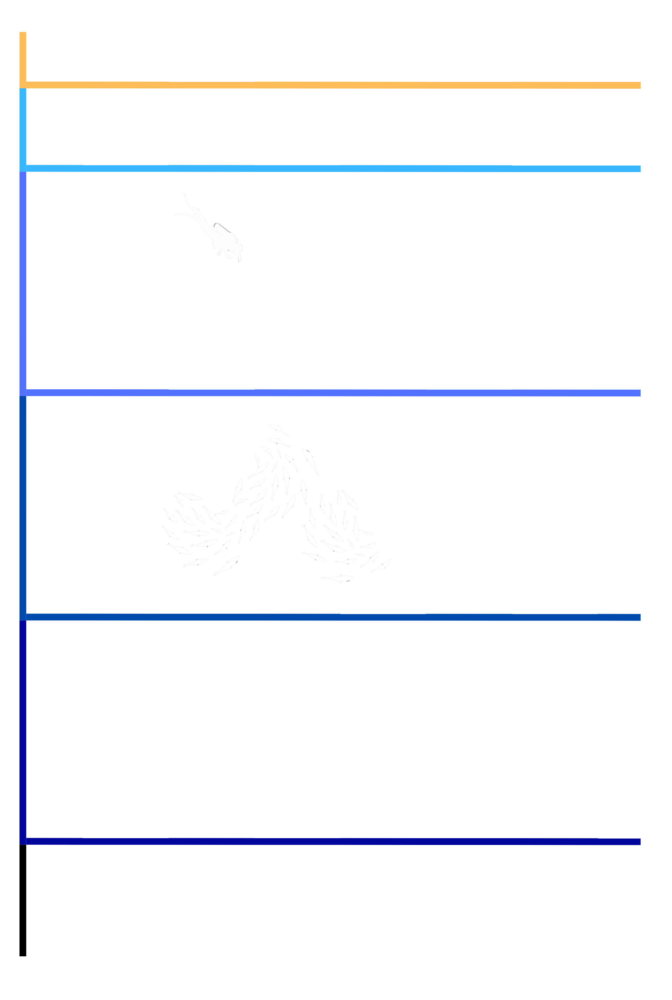

La plongée sous-marine peut être une activitée sportive exercée aussi bien par des professionnels que par des amateurs. Quel que soit le type de plongée que l'on souhaite pratiquer, la prioritée absolue est la sécurité. C'est pour cela qu'il existe divers niveaux de plongée, adaptés aux conditions spécifiques de l'environnement aquatique et à l'expérience du plongeur. Ces niveaux et les formations correspondantes sont définis par la Professionnal Association of Diving Instructors (PADI). En France, c'est le FFESSM qui a cette responsabilitée.
La PADI répertorie quatre niveaux de plongée, ainsi qu'un premier bâpteme qui sert initié à les débutant aux sensations de la plongée :
Le niveau 1 :
Ce niveau permet d’acquérir le minimum de connaissances théoriques et pratiques nécessaires a la plongée. Son titulaire est capable d’assurer sa propre sécurité et d’évoluer avec confort dans la zone des 20m accompagné d’un guide de palanquée (groupe de plongeurs) pour explorer les fonds marins.
Le niveau 2 :
Le niveau 2 permet au plongeur d’évoluer entre plongeurs de même niveau, dans la limite des 20 m.
En cas d’incident, un plongeur de niveau 2 doit être capable de porter assistance à son ou ses coéquipiers.
Encadré par un moniteur ou un plongeur de niveau 4, il peut évoluer dans la zone des 40 m.
Le niveau 3 :
Le niveau 3 atteste d’une autonomie plus importante que le niveau 2. Il confère au titulaire la possibilitée d’évoluer avec des plongeurs de même niveau dans la zone des 60m sans pour autant avoir l’obligation d’avoir un directeur de plongée ou un encadrant de niveau 4 dans le groupe.
Le niveau 4 :
Il s'agit du brevet technique le plus élevé de la FFESSM. Le niveau 4 est guide de palanquée et peut encadrer
des plongeurs niveau 1 ou niveau 2, il doit pouvoir assurer leur sécurité.
Ce niveau est destiné à ceux qui ont choisi la voie de l’enseignement sportif, technique et théorique,
ou souhaite le faire.